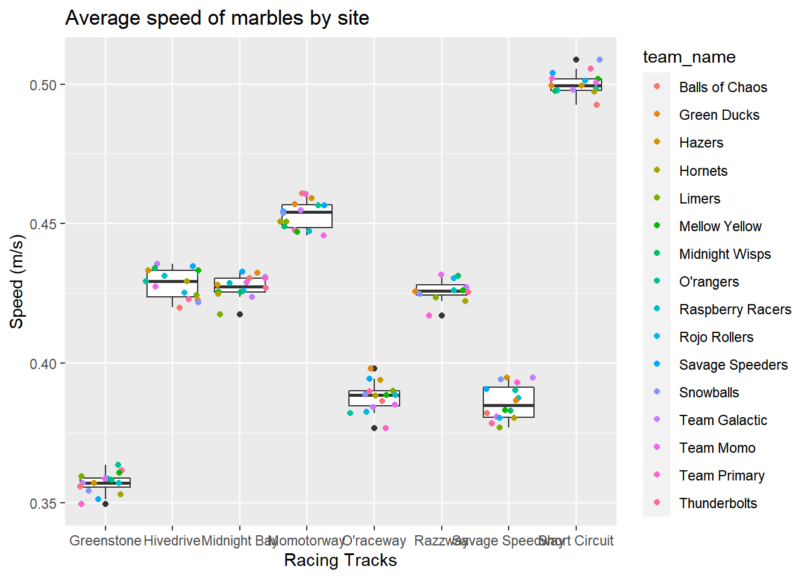

library(tidyverse) # data wrangling suite
library(tidymodels) # modeling suite (possibly use)
library(broom) # Clean up outputs
library(skimr) # Data Summary statistics
library(janitor) # Cleaning names to make human friendly
library(lubridate)
library(here) # try using this to find files easier# Get the data
marbles <- readr::read_csv('https://raw.githubusercontent.com/rfordatascience/tidytuesday/master/data/2020/2020-06-02/marbles.csv')## Rows: 256 Columns: 14## -- Column specification --------------------------------------------------------
## Delimiter: ","
## chr (9): date, race, site, source, marble_name, team_name, pole, host, notes
## dbl (5): time_s, points, track_length_m, number_laps, avg_time_lap##
## i Use `spec()` to retrieve the full column specification for this data.
## i Specify the column types or set `show_col_types = FALSE` to quiet this message.skim(marbles)| Name | marbles |
| Number of rows | 256 |
| Number of columns | 14 |
| _______________________ | |
| Column type frequency: | |
| character | 9 |
| numeric | 5 |
| ________________________ | |
| Group variables | None |
Variable type: character
| skim_variable | n_missing | complete_rate | min | max | empty | n_unique | whitespace |
|---|---|---|---|---|---|---|---|
| date | 0 | 1.00 | 8 | 9 | 0 | 16 | 0 |
| race | 0 | 1.00 | 4 | 4 | 0 | 16 | 0 |
| site | 0 | 1.00 | 7 | 15 | 0 | 8 | 0 |
| source | 0 | 1.00 | 34 | 34 | 0 | 16 | 0 |
| marble_name | 0 | 1.00 | 4 | 9 | 0 | 32 | 0 |
| team_name | 0 | 1.00 | 6 | 16 | 0 | 16 | 0 |
| pole | 128 | 0.50 | 2 | 3 | 0 | 16 | 0 |
| host | 0 | 1.00 | 2 | 3 | 0 | 2 | 0 |
| notes | 249 | 0.03 | 37 | 100 | 0 | 7 | 0 |
Variable type: numeric
| skim_variable | n_missing | complete_rate | mean | sd | p0 | p25 | p50 | p75 | p100 | hist |
|---|---|---|---|---|---|---|---|---|---|---|
| time_s | 3 | 0.99 | 190.84 | 169.13 | 17.76 | 28.40 | 36.28 | 338.16 | 492.01 | ▇▁▁▇▁ |
| points | 128 | 0.50 | 6.45 | 7.74 | 0.00 | 0.00 | 3.00 | 11.25 | 26.00 | ▇▂▂▁▁ |
| track_length_m | 0 | 1.00 | 13.22 | 0.95 | 11.90 | 12.62 | 13.02 | 14.13 | 14.55 | ▅▅▂▁▇ |
| number_laps | 0 | 1.00 | 6.25 | 5.53 | 1.00 | 1.00 | 5.00 | 10.25 | 16.00 | ▇▁▃▂▂ |
| avg_time_lap | 3 | 0.99 | 29.70 | 5.55 | 17.76 | 25.94 | 30.05 | 33.65 | 41.62 | ▃▆▇▇▂ |
summary(marbles) # summary data## date race site source
## Length:256 Length:256 Length:256 Length:256
## Class :character Class :character Class :character Class :character
## Mode :character Mode :character Mode :character Mode :character
##
##
##
##
## marble_name team_name time_s pole
## Length:256 Length:256 Min. : 17.76 Length:256
## Class :character Class :character 1st Qu.: 28.40 Class :character
## Mode :character Mode :character Median : 36.28 Mode :character
## Mean :190.84
## 3rd Qu.:338.16
## Max. :492.01
## NA's :3
## points track_length_m number_laps avg_time_lap
## Min. : 0.000 Min. :11.90 Min. : 1.00 Min. :17.76
## 1st Qu.: 0.000 1st Qu.:12.62 1st Qu.: 1.00 1st Qu.:25.94
## Median : 3.000 Median :13.02 Median : 5.00 Median :30.05
## Mean : 6.453 Mean :13.22 Mean : 6.25 Mean :29.70
## 3rd Qu.:11.250 3rd Qu.:14.13 3rd Qu.:10.25 3rd Qu.:33.65
## Max. :26.000 Max. :14.55 Max. :16.00 Max. :41.62
## NA's :128 NA's :3
## host notes
## Length:256 Length:256
## Class :character Class :character
## Mode :character Mode :character
##
##
##
## # Look at the unique aspects of some variables
unique(marbles$site) ## [1] "Savage Speedway" "O'raceway" "Momotorway" "Hivedrive"
## [5] "Greenstone" "Short Circuit" "Razzway" "Midnight Bay"unique(marbles$team_name)## [1] "O'rangers" "Team Galactic" "Team Momo" "Mellow Yellow"
## [5] "Snowballs" "Raspberry Racers" "Team Primary" "Hornets"
## [9] "Hazers" "Green Ducks" "Midnight Wisps" "Rojo Rollers"
## [13] "Thunderbolts" "Limers" "Balls of Chaos" "Savage Speeders"unique(marbles$marble_name) ## [1] "Clementin" "Starry" "Momo" "Yellow" "Snowy" "Razzy"
## [7] "Prim" "Vespa" "Hazy" "Mallard" "Wispy" "Rojo Uno"
## [13] "Shock" "Sublime" "Clutter" "Speedy" "Wospy" "Smoggy"
## [19] "Rezzy" "Limelime" "Billy" "Rapidly" "Hive" "Yellup"
## [25] "Anarchy" "Bolt" "Mimo" "Pulsar" "Snowflake" "Rojo Dos"
## [31] "Orangin" "Mary"unique(marbles$pole) ## [1] "P1" "P2" "P3" "P4" "P5" "P6" "P7" "P8" "P9" "P10" "P11" "P12"
## [13] "P13" "P14" "P15" "P16" NAunique(marbles$notes) ## [1] NA
## [2] "Note: Came to complete stop in Lap 14"
## [3] "*Note: A yellow SAFETY flag is issued due to incident in Lap 1."
## [4] "Shortly after, a red SUSPENDED flag is issued to restart the race, due to major blockage."
## [5] "**Note: Upon the restart, another red flag is issued due to a track invasion incident by a rowdy fan"
## [6] "Race resumed normally after the culprit is escorted by security marbles"
## [7] "*Note: Slight incident between Speedy and Clementin"
## [8] "Ultimately, JMRC reviews and deems no action is necessary"Summary of unique entries is we have 8 sites, 16 teams, and 32 marbles.
Viewed 8 unique notes. Considering removing all filled entries as they have cases that may have affected the race instead of just being marble, and site. Also include possible collisions and I want to eliminate the
Pole signals the position/competitive situation of an entry, goes from 1-16 with some NAs. Will want to clean up separately for a different analysis potentially.
Make some of the character data types into factors.
marbles2<- marbles%>%
mutate(
# use lubridate to change dmy date to ymd date for ease of explorations
date=as_date(dmy(date)),
# chance into factors
marble_name=as.factor(marble_name),
team_name=as.factor(team_name),
site=as.factor(site),
# make new variable of total track distance traveled in race
TotalTrackDistance=((track_length_m)*(number_laps)),
# make new variable of Speed in m per s for total race
Speed=((TotalTrackDistance)/(time_s))
) %>%
# Filter out the notes sections with thing in col.
filter(is.na(notes))%>%
select(date, site, source, marble_name,team_name, time_s, pole, points, track_length_m,number_laps,avg_time_lap,TotalTrackDistance,Speed)
marbles2%>%
summary()## date site source marble_name
## Min. :2020-02-15 Greenstone :32 Length:249 Billy : 8
## 1st Qu.:2020-02-23 Hivedrive :32 Class :character Bolt : 8
## Median :2020-03-08 Momotorway :32 Mode :character Clementin: 8
## Mean :2020-03-10 O'raceway :32 Hazy : 8
## 3rd Qu.:2020-03-22 Savage Speedway:32 Hive : 8
## Max. :2020-04-05 Short Circuit :31 Limelime : 8
## (Other) :58 (Other) :201
## team_name time_s pole points
## Green Ducks : 16 Min. : 17.76 Length:249 Min. : 0.000
## Hornets : 16 1st Qu.: 28.55 Class :character 1st Qu.: 0.000
## Mellow Yellow : 16 Median : 36.15 Mode :character Median : 2.000
## Midnight Wisps : 16 Mean :189.88 Mean : 6.228
## Raspberry Racers: 16 3rd Qu.:338.25 3rd Qu.:11.000
## Rojo Rollers : 16 Max. :492.01 Max. :26.000
## (Other) :153 NA's :2 NA's :126
## track_length_m number_laps avg_time_lap TotalTrackDistance
## Min. :11.90 Min. : 1.000 Min. :17.76 Min. : 11.90
## 1st Qu.:12.05 1st Qu.: 1.000 1st Qu.:25.95 1st Qu.: 13.20
## Median :12.84 Median : 1.000 Median :30.00 Median : 14.55
## Mean :13.21 Mean : 6.201 Mean :29.68 Mean : 81.03
## 3rd Qu.:14.05 3rd Qu.:11.000 3rd Qu.:33.67 3rd Qu.:145.20
## Max. :14.55 Max. :16.000 Max. :41.62 Max. :205.44
## NA's :2
## Speed
## Min. :0.3496
## 1st Qu.:0.4164
## Median :0.4385
## Mean :0.4570
## 3rd Qu.:0.4981
## Max. :0.6700
## NA's :2marbles2%>%
group_by(site, TotalTrackDistance, track_length_m, number_laps)%>%
arrange(TotalTrackDistance)%>%
summarize()## `summarise()` has grouped output by 'site', 'TotalTrackDistance', 'track_length_m'. You can override using the `.groups` argument.## # A tibble: 16 x 4
## # Groups: site, TotalTrackDistance, track_length_m [16]
## site TotalTrackDistance track_length_m number_laps
## <fct> <dbl> <dbl> <dbl>
## 1 Greenstone 14.6 14.6 1
## 2 Greenstone 131. 14.6 9
## 3 Hivedrive 13.2 13.2 1
## 4 Hivedrive 145. 13.2 11
## 5 Midnight Bay 12.8 12.8 1
## 6 Midnight Bay 205. 12.8 16
## 7 Momotorway 12.0 12.0 1
## 8 Momotorway 157. 12.0 13
## 9 O'raceway 14.0 14.0 1
## 10 O'raceway 126. 14.0 9
## 11 Razzway 14.4 14.4 1
## 12 Razzway 144. 14.4 10
## 13 Savage Speedway 12.8 12.8 1
## 14 Savage Speedway 128. 12.8 10
## 15 Short Circuit 11.9 11.9 1
## 16 Short Circuit 167. 11.9 14After looking at the data and key, notice that there is a notes variable. Operating on the assumption of no issues will likely remove any
See that there are repeat info on the site of race and the speed of a single lap versus multiple laps. Will need to focus on either 1 lap or the full race. filter out the single runs
# speed is calculated by the total distance of a race (laps* track length)
marbles2%>%
filter(number_laps!="1")%>% #remove the single laps
ggplot(aes(x=site, y=Speed))+
geom_boxplot(aes())+
geom_jitter(aes(color=team_name))+
labs(title = "Average speed of marbles by site",
y="Speed (m/s)",
x= "Racing Tracks")## Warning: Removed 2 rows containing non-finite values (stat_boxplot).## Warning: Removed 2 rows containing missing values (geom_point). ### Points earned by marble
speedpoints<-marbles2%>%
filter(points!="NA")%>%
# see the team and top marble stats
group_by(team_name, marble_name)%>%
summarise(
n=n(),
"Points"=mean(points),
"Points SD"=sd(points),
"m/s"=mean(Speed),
"m/s SD"=sd(Speed)
)%>%
arrange(desc(Points, Speed))%>%
#clarify in naming
rename("Team Name"=team_name,
"Marble Name"= marble_name,
"Points Earned"= Points)## `summarise()` has grouped output by 'team_name'. You can override using the `.groups` argument.print(speedpoints)## # A tibble: 32 x 7
## # Groups: Team Name [16]
## `Team Name` `Marble Name` n `Points Earned` `Points SD` `m/s` `m/s SD`
## <fct> <fct> <int> <dbl> <dbl> <dbl> <dbl>
## 1 Savage Speeders Speedy 4 14.8 7.41 0.446 0.0473
## 2 Snowballs Snowy 4 14.5 9.47 0.447 0.0480
## 3 Team Primary Prim 4 13.5 3 0.447 0.0462
## 4 Savage Speeders Rapidly 3 12 10.4 0.393 0.0417
## 5 Hazers Smoggy 3 10.7 5.86 0.442 0.0533
## 6 O'rangers Orangin 3 9.67 13.4 0.392 0.0339
## 7 Hazers Hazy 4 9.25 8.62 0.410 0.0439
## 8 Green Ducks Mallard 4 9 7.39 0.408 0.0449
## 9 Balls of Chaos Clutter 4 8.75 11.8 0.407 0.0472
## 10 Team Galactic Starry 4 8.75 11.1 0.408 0.0416
## # ... with 22 more rowsTop point getters are from Savage Speeders.
Let’s graphically see this:
speedpoints%>%
# reorder the teams by total points earned
ggplot(aes(`Points Earned`,y=reorder(`Team Name`,`Points Earned`)))+
#add the marble names to show what type of contribution they had per total points earned in the season
geom_col(aes(fill=`Marble Name`))+
# need to rename the legend
guides(fill=guide_legend(title="Marbles"))+
labs(title= "Marbula Marble Average Points Earned per site season",
x= "Points Earned",
y= "Team",
caption = " *Two Marbles earned 0 points (Vespa of the Hornets & Mary of Team Primary)."
)Still curious about the sites, let’s see how many points we are earning per race site
marbles2%>%
filter(number_laps!="1")%>% #remove the single laps
# reorder the teams by total points earned
ggplot(aes(points,y=reorder(team_name,points)))+
#add the marble names to show what type of contribution they had per total points earned in the season
geom_col(aes(fill=marble_name))+
# Separate each site to see the individual points for each site
facet_wrap(.~site)+
labs(title= "Marbula Marble points earned at each race site",
x= "Points Earned",
y= NULL,
caption = " *Two Marbles earned 0 points (Vespa of the Hornets & Mary of Team Primary)."
)+
# need to rename the legend
guides(fill=guide_legend(title="Marbles"))+
# Try to adjust the crowded Y axis with teams
theme(axis.text.y=element_text(angle=0,size = rel(0.5),
margin = margin(-0.5, unit = "cm"),
vjust =0))